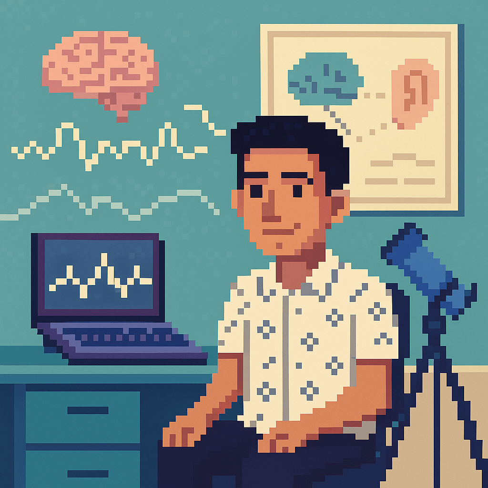

I'm researcher at Sharif Brain Center and currently studying decision making. I received my Master's under the supervision of Dr. Reza Ebrahimpour and Dr.S. Hamid Amiri.
I used GLMs to better understand the brain activities in high and low cognitive load while continuous multimedia is being played. My main interest is using computational methods to do model-driven research on neural data. In addition, I'm interested in developing and improving methods of analyzing neuroimaging data.
Outside of research, I enjoy stargazing, hiking, and lifelong learning.
Email: asaadi.amir [at] gmail [dot] com
Twitter
Online course, 2022
[content]
Topics covered: Modeling practice, Model fitting, GLMs, Dimensionality reduction, Bayesian statistics, Linear dynamical systems, Markov process, Decision making, Hidden Markov models, Kalman filter, Optimal control, Markov decision process, Reinforcement learning, Modeling real neuron, Modeling neuronal networks using Wilson-Cowan model, Causality, Deep learning (with Pytorch), Autoencoders
[course page]
[certificate]
I have great experience working with EEG data while studying the dynamics and topography of neural components. First I use EEGLAB and its plugins such as Clean Rawdata ASR, ICLabel, and Adjust to preprocess the data then I use the mTRF toolbox to run cross-validation and find the best temporal response function to predict real data. I have learned these by EEGLAB and CNSP workshops.
| Title | Supervisors | Stage | Methods |
|---|---|---|---|
| Neural Response to Daylight in Virtual Offices | Dr. Reza Ebrahimpour, Dr. Pegah Payedar-Ardakani | Data Analysis | EEG |
| Real vs Imaginary Hand Movements (ECOG) | Dr. Litvak, Dr. Zibman, Mohammad Rabiei | Presented (NMA) | MNE-Python |
| V4 Prediction from Natural Images (fMRI) | Dr. Ehsan Rezayat, Raul Hernandez | Presented (NMA) | scikit-learn |
| Persian Digit Recognition | Dr. Reza Ebrahimpour | Passed | Python, Deep Learning |
| Python Educational Multimedia | Dr. Samira Noferesti | Published | LaTeX, Video Editing |
| Library Management System | maktabkhooneh.org | Passed | Django |